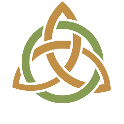

BookmarksA curated collection of the most important KERI Suite resources:
repositories, blog posts and whitepapers.
Missing a link? Edit bookmarks/index.html — the collection is a plain JavaScript list at the bottom of the file.